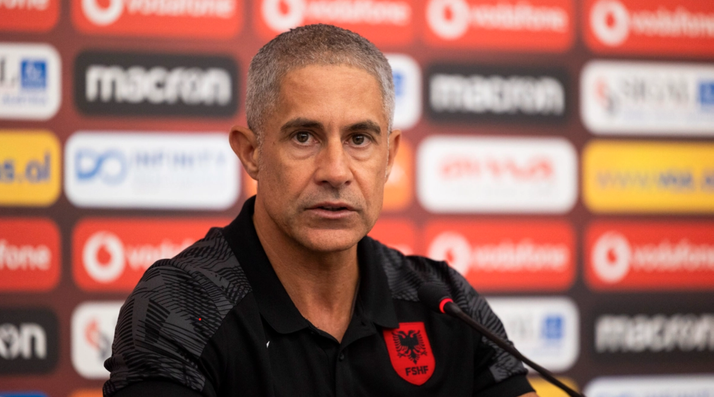
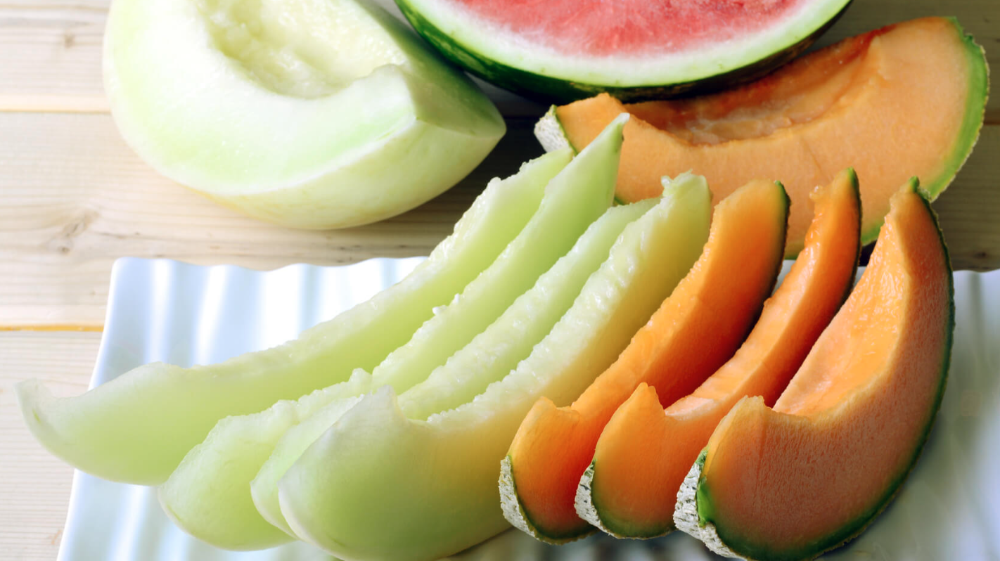

A e dini se stina e dimrit dëmton baterinë e celularit tuaj? Arsyet do t’iu befasojnë
07-12-2023
Gjithçka që bëjnë telefonat tanë, është me të vërtetë e mrekullueshme.
Por ka një gjë që nuk e bëjnë dot mirë: t’i rezistojnë motit të ftohtë.
Zbulohet plani anti-Sunak, Boris Johnson rikthehet si kryeministër në koalicion me “babain” e Brexit
07-12-2023
Mbi pjatat me ravioli dhe mëlçi viçi, të shoqëruara me verë të kuqe nga Italia e jugut, armiqtë politikë
të
Rishi Sunak kanë komplotuar lëvizjen e tyre të radhës kundër qeverisë.
BE njofton për 125 milionë euro ndihmë humanitare për palestinezët
10-12-2023
BE njofton për 125 milionë euro ndihmë humanitare për palestinezët.

Kompletohen 16 ekipet e mbetura në garë për Kupën e Kosovës, caktohet edhe data e shortit
10-12-2023
Dinamo ka kompletuar numrin e skuadrave që do të jenë pjesëmarrëse në 1/8 e
finales së Kupës së Kosovës në futboll.

Dyshohet se keqpërdorën ujin e ujësjellësit, fabrika ‘Spirit of Drini’ procedohet në Prokurori
10-12-2023
Fabrika për prodhimin e ujit, ‘Spirit of Drini’, është proceduar në Prokurorinë Themelore në Pejë, pasi
u
denoncua publikisht se ka keqpërdorur ujin ilegalisht, raporton Gazeta Sinjali.
Facebook dhe Messenger do të kodojnë mesazhet automatikisht
10-12-2023
Të gjitha bisedat në Facebook dhe Messenger do të kodohen automatikisht,
ka njoftuar kompania mëmë Meta.

Pamje dramatike/ Momenti i ekzekutimit të 41-vjeçarit në Fier
10-12-2023
Ky është momenti i ekzekutimit të Erjon Javorit mesditën e së enjtes në lagjen
“16 Prilli” në Fier, disa metra larg banesës së tij.
Hill: Serbët në Veri duhet të kenë perspektivë për të ardhmen, Asociacioni është hap i qartë në këtë drejtim
10-12-2023
Ambasadori amerikan në Serbi, Christopher Hill ka folur për normalizimin e marrëdhënieve
mes Kosovës dhe Serbisë, e që si një kusht kyç konsiderohet njohja de facto e Kosovës.

Alarmon Shakohoxha: Shqipëria ende s’e ka vazhduar kontratën me Sylvinhon, ai është i tundur nga ofertat tjera
10-12-2023
Gazetari sportiv, Dritan Shakohoxha, ka alarmuar në “Favorit” me lajmin e fundit
rreth kontratës së trajnerit Sylvinho.
“I tundur nga ofertat tjera”, Sylviniho flet për kontratën me Shqipërinë: Ndihem shumë mirë këtu
10-12-2023
Trajneri i kombëtares së Shqipërisë, Sylvinho, ka folur mbi kontratën që ai ka me kuqezinjtë,
duke thënë se s’ka firmosur ende asgjë por nuk ndihet i shqetësuar.
Trondit vëllai i Liridonës: Naimi kishte shumë shpenzime, vrasësit kanë ngrënë bukën tonë
10-12-2023
Vëllai i Liridona Ademajt, 30-vjeçares që u vra me armë zjarri para disa ditësh
në Prishtinë ka rrëfyer gjithçka lidhur me ngjarjen e rëndë,
duke treguar se si nisën dyshimet te Naim Murseli, bashkëshorti i motrës së tij.
Fjalët e Naim Murselit në gjykatë: Nuk kam ikur nga vendi i ngjarjes, kam qenë edhe unë i rrezikuar
10-12-2023
Gjykata Themelore në Prishtinë sot ka caktuar masën e paraburgimit për një muaj ndaj Naim Murselit,
Granit Plavës dhe Kushtrim Kokallës lidhur me dyshimet për vrasjen e Liridona Ademaj.
Vrasja e Liridona Ademajt – a e ka kontaktuar Naim Murseli, Behgjet Pacollin në natën e krimit?
10-12-2023
Lideri i Alenacës Kosova e Re, Behgjet Pacolli, ka folur për figurën e Naim Murselit,
të dyshuarin për vrasjen e Liridona Ademajt.
Pacolli për rivarrimin e Liridonës: Fëmijët e saj që ishin aq shumë të lidhur me të, s’ishin të pranishëm
10-12-2023
Lideri i Aleancës Kosova e Re, Behgjet Pacolli, ka reaguar pas rivarrimit të Liridona Ademajt, e cila
dyshohet se u vra
nga ish-këshilltari i tij, bashkëshorti i saj, Naim Murseli, raporton Sinjali.

Diaspora dërgoi mbi 1 miliard euro remitanca deri në shtator 2023
10-12-2023
Sipas statistikave të Bankës Qendrore të Kosovës (BQK), në periudhën deri në shtator të këtij viti, mbi
1 miliard euro janë dërguar
në Kosovë. Kjo vlerë përbën rritje prej 11.5 për qind krahasuar me vitin paraprak.
“Shfrytëzoni kartelat bankare”, kërkohet nga qytetarët të shmangin përdorimin e 2 eurove
10-12-2023
Banka Qendrore e Republikës së Kosovës, në bashkërendim me Policinë e Kosovës, Agjencinë e Kosovës për
Forenzikë, Doganat e Kosovës, Administratën Tatimore të Kosovës, Njësinë e Inteligjencës Financiare,
Inspektoratin e Tregut dhe Agjencinë e Kosovës për Inteligjencë kanë mbajtur sot një takim lidhur
me intensifikimin e veprimeve institucionale për luftimin e parave të falsifikuara që po qarkullojnë në
Kosovë.
Pse Netflix po anulon masivisht serialet e njohura?
10-12-2023
Muajin e kaluar, Netflix u kritikua për anulimin e pesë serialeve njëherësh, duke përfshirë një që
shikuesit e pëlqyen veçanërisht, të cilin shumë nuk e kuptuan.

Ismail Kadare flet për mediat italiane: ‘Pallati i Ëndrrave’ më solli shumë telashe, s’kam theksuar admirimin për Enver Hoxhën
10-12-2023
Shkrimtari i madh, Ismail Kadare është rikthyer në libraritë italiane me “Pallatin e Ëndrrave”, një
roman të 40 viteve më parë që ruan fuqinë dhe freskinë të ngjarjeve aktuale. Në një intervistë të dhënë
për La Lettura të “Corriere della Sera”, shkrimtari gjirokastrit foli për kohën kur shkruajti romanin,
marrëdhëniet e tij me Enver Hoxhën dhe për teknologjinë në kohën e sotme dhe frikën ekzistuese se kjo e
fundit po na kontrollon mendjen.
Futbolli me lëvizje revolucionare, do të futet në përdorim largimi i përkohshëm dhe kartoni portokalli
10-12-2023
Largimi i përkohshëm (Sin-bins) do të futet në futbollin profesionist pasi ligjvënësit e lojës vendosën
të provojnë lëvizjen revolucionare.
‘Godet’ Blero: Secili sen që ndodh në këtë jetë ndodh që na ndodh neve, ndodh për neve
10-12-2023
Blero sërish ka lëshuar një mendim të thellë të tij teksa bisedonte me një pjesë të banorëve të Big
Brother VIP Kosova.
“M’u desh të krijoja një bandë, u largova për jetesë më të mirë”, Noizy flet për vitet e para në Angli
10-12-2023
Rigels Rajku, reperi i njohur me emrin e artit Noizy, ka dhënë një intervistë për mediat angleze Daily
Express, ku ka rrëfyer largimin e tij nga Shqipëria kur ka qenë fëmijë, jetën në Londër dhe karrierën e
tij.
“Hoti: Asnjë shenjë nuk e bëri në ekonomi qeveria e “punësimit dhe drejtësisë”
10-12-2023
Shkruan: Avdullah Hoti

“Super aplikacioni” – platforma për të menaxhuar gjithçka në internetin e Rusisë
10-12-2023
Do të mund t’i paguani taksat. Do të mund të shpërndani, pëlqeni, të ndërhyni në video. Do të mund të
regjistroni fëmijën tuaj në kopsht. Do të mund t’iu dërgoni mesazhe miqve, të paguani gjobën e trafikut,
të lëshoni muzikë, të gjeni një partner biznesi, romantik, dhe më shumë – dhe do të mund të thirreni për
të luftuar në Ukrainë.
Cilat janë më të mira për dimër, gomat e gjera apo të ngushta, video e testimit zgjidh dilemën
10-12-2023
Ekziston një teori për përzgjedhjen e gomave të ngushta të dimrit, pasi që një e tillë ushtron më
shumë presion në sipërfaqe, gjë që çon tek fërkimi më efikas.
10-12-2023
Windows 12 do të lansohet në treg verën e ardhshme?
10-12-2023
Sipas një raporti të fundit, Windows 12 do të dalë në treg verën e ardhshme, në qershor 2024.
10-12-2023
Këto janë katër pijet që rekomandohet t’i konsumoni kur keni anemi
10-12-2023
Shkaktari më i shpeshtë i anemisë është mungesa e hekurit dhe pa të, organizmi nuk është në gjendje
ta prodhojë hemoglobinën që u nevojitet qelizave të kuqe të gjakut për ta transportuar oksigjenin.
10-12-2023
Ushtrimet e rregullta ndikojnë që të bëni gjumë më të mirë
10-12-2023
Ushtrimet e rregullta kanë shumë përfitime, duke përfshirë këtu edhe gjumin e mirë.
10-12-2023
Nuk mund ta duroni ndjesinë e ushqimit djegës, këta janë hapat që duhet të bëni pas ngrënies
10-12-2023
Ushqimet pikante për shumë njerëz janë të shijshme, por disa nuk mund ta durojnë ndjesinë që japin
ato.
10-12-2023

Pjepri ndihmon në uljen e presionit të gjakut
Pjepri ndihmon në uljen e presionit të gjakut
10-12-2023
Pjepri e mbron trupin tuaj si nga brenda ashtu edhe jashtë, duke përfshirë shëndetin e kockave,
tretjen dhe shëndetin e lëkurës.
10-12-2023